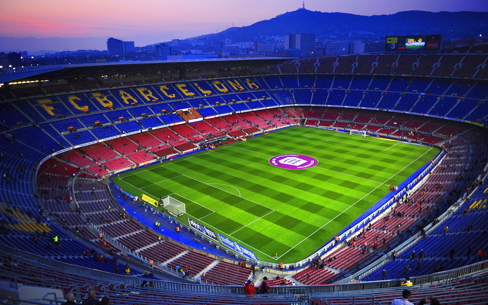
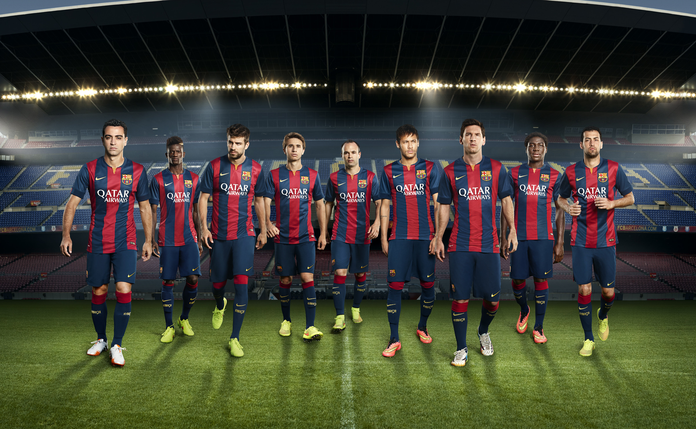
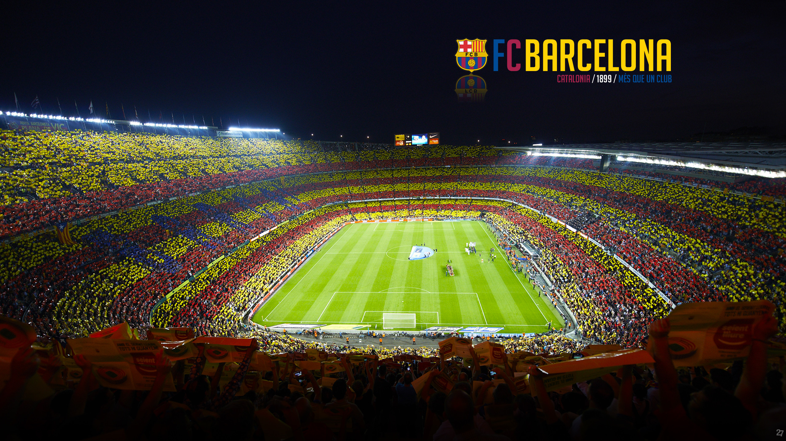

Want to see the most emblematic corners of the stadium? To walk on the pitch? Go in the FC Barcelona dressing room? You’ll get all this and more with the Barça Stadium Tour & Museum. Buy your ticket now and feel like one more member of the squad!.

Camp Nou (Catalan pronunciation: [ˌkamˈnɔw], meaning new field, often referred to in English as the Nou Camp)[5][6] is a stadium in Barcelona, Spain. It opened in 1957 and has been the home stadium of FC Barcelona since its completion.
With a seating capacity of 99,354,[7] it is the largest stadium in Spain and Europe, and the fourth largest football stadium in the world in capacity. It has hosted two European Cup/Champions League finals in 1989 and 1999, two European Cup Winners' Cup finals, four Inter-Cities Fairs Cup final games, five UEFA Super Cup games, four Copa del Rey finals, two Copa de la Liga finals, and twenty-one Supercopa de España finals. It also hosted five matches in the 1982 FIFA World Cup, including the opening game, two out of four matches at the 1964 European Nations' Cup, and the football tournament's final at the 1992 Summer Olympics.

The list of legendary players that have played for Football Club Barcelona is almost endless.
Everyone knows that a footballer's dream is to don either the Catalan club's famous red and blue stripes or the iconic white jersey of Real Madrid.
The Spanish giants are the two biggest clubs in the history of football and pretty much every single big name down the years has turned out for one or the other.
So when it comes to ranking the greatest Barcelona players of all time, the top 30 is a list full of legends from all different eras.
From Johan Cruyff's 'dream team' to the Frank Rjikaard and Pep Guardiola eras, the history of Barcelona really is quite re

The first place I entered was the Museum and Trophy display, where you will see the history of the club, along with Messi’s line-up of 5 FIFA Ballon D’or. Seeing all these would have anyone gasping, football fan or not, it’s such an impressive journey that FC Barcelona went through.
Football is My Drug and Barcelona is My delar